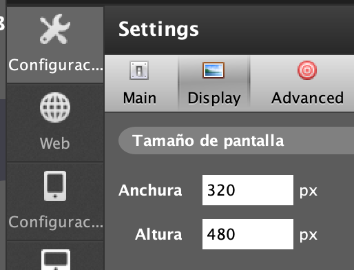
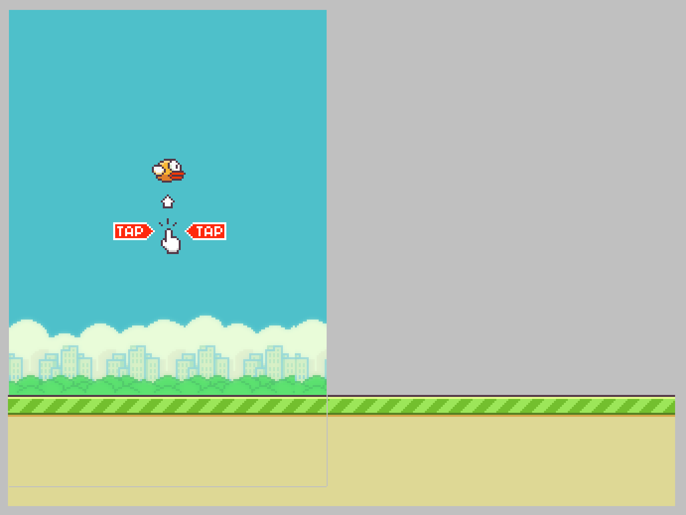
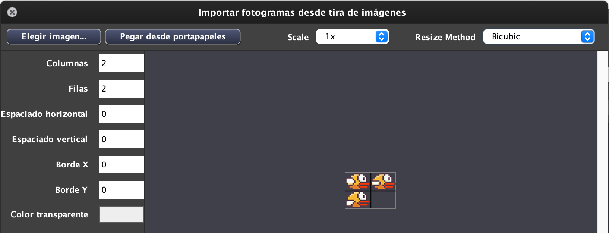
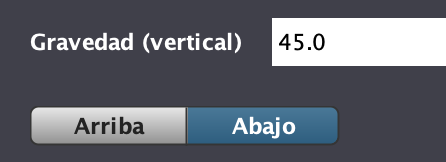

El Flappy Bird es un juego donde el pájaro tiene que esquivar las tuberías que se van generando y moviendose hacia la izquierda
y de arriba abajo. Si las esquiva logrará puntos pero si se da con ellas le quitará vidas.
Se movera con el click del ratón hacia arriba.
Es el suelo que se ira generando constantemente y se movera hacia la izquierda.
Aparecerán por la derecha cada cierto tiempo en posiciones aleatorias de "Y" y subiendo y bajando un poco para que sea más dificil el juego e iran hacia la izquierda.
Recarga de nuevo el Juego cuando nos quedemos sin vidas.
Es una entidad que solo se mostrara para que vuelvas a jugar.
Simplemente se mostrara al principio del juego junto con el Flappy Bird y se destruira.
Haremos conductas para todas las entidades y usaremos un nuevo bloque muy parecido al enviar de Scratch.
El juego consiste en que el Flappy Bird tiene que sobrepasar las tuberias sumando puntos e intentar no chocar con las
tuberias para que no nos quiten vidas.
Tendrá 3 vidas y cuando ya no tengamos más vidas aparecera el "Game Over".
Pondremos sonidos de Die (quita vidas), Hit (cuando se choca con la tuberia) y Point (suma puntos).
El tamaño del juego será de:

El tamaño del Escenario será Anchura 10 y Altura 15. Necesitamos crear un fondo, lo seleccionamos donde tengamos los recursos del Flappy Bird/BackGround con la escala 4.

El Flappy Bird tenemos también que seleccionarlo con escala 1 pero antes de elegir la imagen tenemos que poner en Columnas 2 y Filas 2. Ya que están las animaciones en el mismo Sprite FlappyBird.png y tenemos que separarlas.

Las Instrucciones la seleccionamos pero con la escala a 1.
Y nos quedaría por poner el Ground con escala 1, pero ponemos 2 ya que tendremos que ir generandolo continuamente.
En Físicas del Escenario pondremos una gravedad vertical.
